Member Search

|
Introduction
This article presents a new approach for computing maximum flow in a
graph. Previous articles had concentrated on finding maximum flow by
finding augmenting paths. Ford-Fulkerson and Edmonds-Karp algorithms belong to that class. The approach presented in this article is called push-relabel, which is a separate class of algorithms. We'll look at an algorithm first described by Andrew V. Goldberg and Robert E. Tarjan,
which is not very hard to code and, for dense graphs, is much faster
than the augmenting path algorithms. If you haven't yet done so, I'd
advise you to review the articles on graph theory and maximum flow using augmenting paths for a better understanding of the basic concepts on the two topics.
The Standard Maximum Flow Problem
Let G = (V,E) be a directed graph with vertex set V and edge set E. Size of set V is n and size of set E is m. G has two distinguished vertices, a source s and a sink t. Each edge (u,v) ε E has a capacity c(u,v). For all edges (u,v) ∉E, we define c(u,v) = 0. A flow f on G is a real valued function satisfying the following constraints:
- Capacity: f(v,w) ≤ c(v,w) ∨ (v,w) ∊ V × V
- Anti-symmetry: f(v,w) = – f(w,v) ∨ (v,w) ∊ V × V
- Flow Conservation: ∑ u ∊ V f(u,v) = 0 ∨ v ∊ V - {s,t}
The value of a flow f is the net flow into the sink i.e. | f | = ∑ u ∊ V f(u,t) . Figure 1 below shows a flow network with the edges marked with their capacities. Using this network we will illustrate the steps in the algorithm.
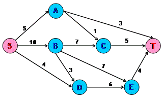
Figure 1 : Flow Network with Capacities
Intuitive Approach Towards the Algorithm
Assume that we have a network of water tanks connected with pipes in
which we want to find the maximum flow of water from the source tank to
the sink tank. Each of these water tanks are arbitrarily large and will
be used for accumulating water. A tank is said to be overflowing if it
has water in it. Tanks are at a height from the ground level. The edges
can be assumed to be pipes connecting these water tanks. The natural
action of water is to flow from a higher level to a lower level. The
same holds for this algorithm. The height of the water tank determines
the direction in which water will flow. We can push new flow
from a tank to another tank that is downhill from the first tank, i.e.
to tanks that are at a lesser height than the first tank. We need to
note one thing here, however:The flow from a lower tank to a higher tank might be positive. Present height of a tank only determines the direction of new flow.
We fix the initial height of the source s at n and that of sink t at 0. All other tanks have initial height 0, which increases with time. Now send as much as possible flow from the source toward the sink. Each outgoing pipe from the source s is filled to capacity. We will now examine the tanks other than s and t. The flow from overflowing tanks is pushed downhill. If an overflowing tank is at the same level or below the tanks to which it can push flow, then this tank is raised just enough so that it can push more flow. If the sink t is not reachable from an overflowing tank, we then send this excess water back to the source. This is done by raising the overflowing tank the fixed height n of the source. Eventually all the tanks except the source s and the sink t stop overflowing. At this point the flow from the source to the sink is actually the max-flow.
Mathematical Functions
In this section we'll examine the mathematical notations required for better understanding of the algorithm.
- Preflow - Intuitively preflow function gives the
amount of water flowing through a pipe. It is similar to the flow
function. Like flow, it is a function f: V × V → R. It
also follows the capacity and anti-symmetry constraints. But for the
preflow function, the conservation constraint is weakened.
∑ u ∊ V f(u,v) ≥ 0 ∨ v ∊ V - {s,t}
That is the total net flow at a vertex other than the source that is non-negative. During the course of the algorithm, we will manipulate this function to achieve the maximum flow.
- Excess Flow - We define the excess flow e as e(u) = f(V,u), the net flow into u. A vertex u ∊ V-{s,t} is overflowing / active if e(u) > 0.
- Residual Capacity - We define residual capacity as function cf: V × V → R where
- Height - This function is defined as h: V → N. It denotes the height of a water tank. It has the following properties -
- h(s) = n
- h(t) = 0
- h(u) ≤ h(v) + 1 for every residual edge (u,v).
cf(u,v) = c(u,v) – f(u,v)
If cf(u,v) > 0, then (u,v) is called a residual edge. Readers would have come across this concept in augmenting path algorithms as well.Basic Operations
Following are the three basic functions that constitute the algorithm:
- Initialization – This is carried out once during the beginning of the algorithm. The height for all the vertices is set to zero except the source for which the height is kept at n. The preflow and the excess flow functions for all vertices are set to zero. Then all the edges coming out the source are filled to capacity. Figure 2 shows the network after initialization.
- push(u,v) - This operation pushes flow from an
overflowing tank to a tank to which it has a pipe that can take in more
flow and the second tank is at a lower height than the first one. In
other words, if vertex u has a positive excess flow, cf(u,v) > 0 and h(u) > h(v), then flow can be pushed onto the residual edge (u,v). The amount of the flow pushed is given by min(e(u),cf(u,v)).
Figure 4 shows a vertex B that has an excess flow of 10. It makes two pushes. In the first push, 7 units of flow are pushed to C. In the second push, 3 units of flow are pushed to E. Figure 5 illustrates the final result.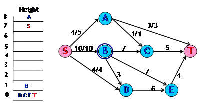
Figure 4 : Network before pushing flow from B
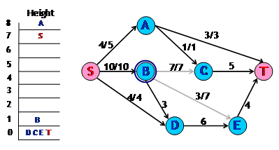
Figure 5 : Network pushing flow from B
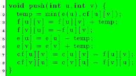
Figure 6 : Code for Push sub-routine
- relabel(u) - This operation raises the height of an overflowing tank that has no other tanks downhill from it. It applies if u is overflowing and h(u) ≤ h(v) ∨ residual edges (u,v) i.e. on all the residual edges from u, flow cannot be pushed. The height of the vertex u is increased by 1 more than the minimum height of its neighbor to which u has a residual edge.
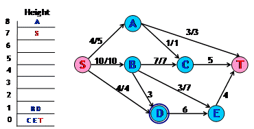
Figure 7 : Network after relabeling D
In Figure 4, pick up vertex D for applying the push operation. We find that it has no vertex that is downhill to it and the edge from D to that vertex has excess capacity. So we relabel D as shown in Figure 5.
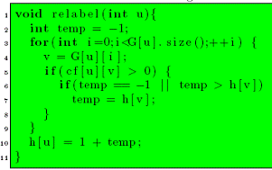
Figure 8 : Code for Relabel sub-routine
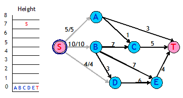
Figure 2 : Network after Initialization
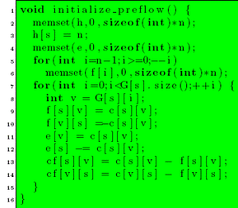
Figure 3 : Code for Initialization
Generic Algorithm
The generic algorithm is as follows:
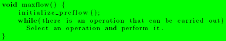
The value e(t) will represent the maximum flow. We now try to see why this algorithm would work. This would need two observations that hold at all times during and after the execution of the algorithm.
- A residual edge from u to v implies h(u) ≤ h(v) + 1 -We had earlier introduced this as a property of the height function. Now we make use of induction for proving this property.
- Initially residual edges are from vertices of height 0 to the source that is at height n.
- Consider a vertex u getting relabeled and v is the vertex of minimum height to which u has a residual edge. After relabeling, the property holds for the residual edge (u,v). For any other residual edge (u,w), h(v) ≤h(w). So after relabeling the property will hold for residual edge (u,w). For a residual edge, (w,u), since u’s height only goes up, therefore the property will continue to hold trivially.
- Consider a push operation from u to v. After the operation, edge (v,u) will be present in the residual graph. Now h(u) > h(v) ∧ h(u) ≤ h(v) + 1
- There is no path for source to sink in the residual graph - Let there be a simple path {v0 , v1 , . . . , vk−1, vk } from v0 = s to vk = t. Then, as per the above observation,
h(v i ) ≤ h(v i+1 ) + 1
→ h(s) ≤ h(t) + k
→ n ≤ k
→ n < k + 1This violates the simple path condition as the path has k+1 vertices. Hence there is no path from source to sink.
→ h(u) = h(v) + 1
→ h(v) = h(u) − 1
→ h(v) _ h(u) + 1
When the algorithm ends, no vertex is overflowing except the source and the sink. There is also no path from source to sink. This is the same situation in which an augmenting path algorithm ends. Hence, we have maximum flow at the end of the algorithm.
Analysis
The analysis requires proving certain properties relating to the algorithm.
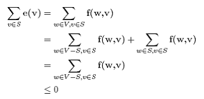
- s is reachable from all the overflowing vertices in the residual graph - Consider u as an overflowing and S as the set of all the vertices that are reachable from u in the residual graph. Suppose s ∉ 2S . Then for every vertex pair (v,w) such that v ∊ S and w ∊ V-S , f(w,v) ≤ 0. Because if f(w,v) > 0, then cf(v,w) > 0 which implies w is reachable from u. Thus, since e(v) ≤ 0, for all v ∊ S, e(v) = 0. In particular, e(u) = 0, which is a contradiction.
- The height of a vertex never decreases - The height of a vertex changes only during the relabeling operation. Suppose we relabel vertex u. Then for all vertices v such that (u,v) is a residual edge, we have h(v) ≤ h(u), which clearly means h(v)+1>h(u). So the height of a vertex never decreases.
- The height of a vertex can be at maximum 2n-1 - This holds for s and t since their heights never change. Consider a vertex u such that e(u) > 0. Then there exists a simple path from u to s in the residual graph. Let this path be u = v0, v1 , . . . , vk−1, vk = s. Then k can be at most n-1. Now, as per the definition of h, h(vi) ≤ h(vi+1) + 1. This would yield h(u) ≤ h(s) + n – 1 = 2n – 1.
Now we are in a position to count the number of operations that are carried out during the execution of the code.
- Relabeling operations - The height for each vertex other than s and t can change from 0 to 2n-1. It can only increase, so there can be utmost 2n-1 relabelings for each vertex. In total there can be a maximum of (2n-1)(n-2) relabelings. Each relabeling requires at most degree(vertex)
operations. Summing this up over all the vertices and over all the
relabelings, the total time spent in relabeling operations is O(nm).
- Saturated Pushes - A saturating push from u to v, results in f(u,v) = c(u,v). In order to push flow from u to v again, flow must be pushed from v to u first. Since h(u) = h(v) + 1, so v’s height must increase by at least 2. Similarly h(u) should increase by at least 2 for the next push. Combining this with the earlier result on the maximum height of avertex, the total number of saturating pushes is at most 2n-1 per edge. So that total overall the edges is at most (2n-1)m < 2nm.
- Non-saturated Pushes - Let φ = ∑ u ∊ V, u is active h(u). Each non-saturating push from a vertex u to any other vertex v causes φ to decrease by at least 1 since h(u) > h(v). Each saturating push can increase φ by at most 2n-1 since it could be that v was not active before. The total increase in φ due to saturating pushes is at most (2n-1)(2nm). The total increase in φ due to relabeling operation is at most (2n-1)(n-2). Therefore, the total number of non-saturating pushes is at most (2n-1)(2nm) + (2n-1)(n-2)≤ 4n2m.
Thus the generic algorithm takes O(n2m) operations in total. Since each push operation requires O(1) time, hence the running time of the algorithm will also be O(n2m) if the condition given in the while loop can be tested in O(1) time. The next section provides an implementation for doing the same. In fact, by ordering the operations in a particular manner, a more rigorous analysis proves that a better time bound can be achieved.
First-in First-out Algorithm
We will make use of a first-in, first-out strategy for selecting
vertices on which push/relabel operation will be performed. This is done
by creating a queue of vertices that are overflowing. Initially all the
overflowing vertices are put into the queue in any order. We will run
the algorithm till the queue becomes empty.
In every iteration the vertex at the front of the queue is chosen for carrying out the operations. Let this vertex be u. Consider all the edges of u, both those that are incident on u and those that are incident on other vertices from u. These are edges along which u can potentially push more flow. Go through these edges one by one, pushing flow along edges that have excess capacity. This is done until either u becomes inactive or all the edges have been explored. If during the iteration any new vertex starts to overflow, then add that vertex to the end of the queue. If at the end of the iteration u is still overflowing, then it means u needs a relabeling. Relabel u and start the next iteration with u at the front of the queue. If any time during the process or at end of it u becomes inactive, remove u from the queue. This process of pushing excess flow from a vertex until it becomes inactive is called discharging a vertex.
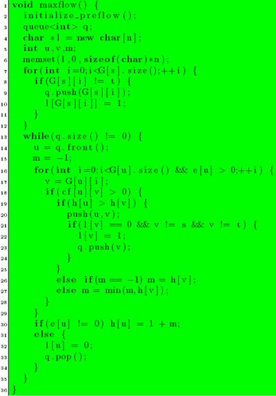
Figure 9 : Code for First-In First-Out Algorithm
Analysis of First-In First-Out Algorithm
To analyze the strategy presented above, the concept of a pass over a queue needs to be defined. Pass 1 consists of discharging the vertices added to the queue during initialization. Pass i + 1 consists of discharging vertices added during the Pass i.
- The number of passes over the queue is at most 4n2 - Let φ = max {h(u) |u is active|}. If no heights changes during a given pass, each vertex has its excess moved to vertices that are lower in height. Hence φ decreases during the pass. If φ does not change, then there is at least one vertex whose height increases by at least 1. If φ increases during a pass, then some vertex’s height must have increased by as much as the increase φ. Using the proof about the maximum height of the vertex, the maximum number of passes in which φ increases or remains same is 2n2. The total number of passes in which φ decreases is also utmost 2n2.Thus the total number of passes is utmost 4n2.
- The number of non-saturating pushes is at most 4n3 - There can be only one non-saturating push per vertex in a single pass. So the total number of non-saturating pushes is at most 4n3.
On combining all the assertions, the total time required for running the first-in first-out algorithm is O(nm + n3) which is O(n3).
Related Problems
In general any problem that has a solution using max-flow can be solved using “push-relabel” approach. Taxi and Quest4
are good problems for practice. More problems can be found in the
article on max flow using augmenting paths. In problems where the time
limits are very strict, push-relabel is more likely to succeed as
compared to augmenting path approach. Moreover, the code size is not
very significant. The code provided is of 61 lines (16 + 36 + 9), and I believe it can be shortened.
In places where only the maximum flow value is required and the actual flow need not be reported, the algorithm can be changed slightly to work faster. The vertices that have heights ≥n may not be added to the queue. This is because these vertices can never push more flow towards the sink. This may improve the running time by a factor of 2. Note that this will not change the asymptotic order of the algorithm. This change can also be applied in places where the min-cut is required. Let (S,T) be the min-cut. Then, T contains the vertices that reachable from t in the residual graph.
References
- Andrew V. Goldberg and Robert E. Tarjan, A new approach to the maximum-flow problem.
- Thomas H. Cormen, Charles E. Leiserson, Ronald L. Rivest. Introduction to Algorithms.
- _efer_. Algorithm Tutorial: MaximumFlow
- gladius. Algorithm Tutorial: Introduction to graphs and their data structures
The author would like to acknowledge the assistance of zenithankit, who helped review and improve this article prior to publication.